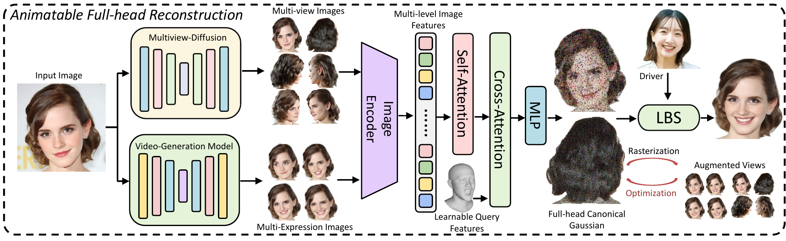

VivaHead: High-Fidelity Animatable Full-Head Reconstruction from a Single Portrait Image
Overview

VivaHead augments a single portrait with synthesized multi-view and multi-expression observations, predicts an initial canonical animatable full-head Gaussian avatar in a feed-forward pass, and refines the result using the generated evidence.
Abstract
Animating a complete 3D head avatar from a single portrait image is highly challenging. A single frontal image provides no evidence for the side or back of the head and contains only one static expression, yet the recovered avatar must be geometrically complete, identity-consistent, and faithfully drivable under arbitrary expressions. While animatable avatar methods have advanced rapidly, most existing approaches still focus on frontal faces rather than the entire head. Conversely, existing full-head methods are largely non-animatable. The few methods that attempt to support both full-head reconstruction and animation are still limited, often rely on mesh-based representations, and may struggle to produce plausible back-head geometry or reliably preserve facial identity.
We present VivaHead, a generation-augmented Gaussian avatar framework for single-image full-head reconstruction and animation. Our method compensates for the severe information deficiency of a single portrait with two complementary types of synthesized observations: multi-view images under predefined viewpoints, and multi-expression images of the same identity via diffusion-based reenactment. Together, these synthesized observations provide informative cues for both full-head completion and animation detail recovery.
The source image, together with the generated multi-view and multi-expression images, is fed into a feed-forward Gaussian reconstruction branch that predicts an initial canonical animatable full-head avatar in a single forward pass. We further adopt an expression-neutral representation that suppresses source-expression leakage into the canonical avatar. Starting from this initial prediction, we apply a lightweight refinement stage that leverages the synthesized observations to improve geometry and appearance details.
Experiments show that VivaHead outperforms existing approaches in both full-head reconstruction and animation, producing more plausible back-head geometry, stronger frontal identity preservation, and more vivid expression-dependent details.